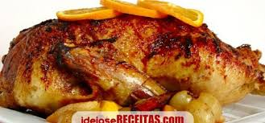

Foto do prato Pato com Laranja (Foto : Fonte google img)
Descasque as batatas e cozinhe até ficarem al dente. Retire toda casca das batatas. misture tudo ao frango assado e adicione o suco de larnaja com limão para dar uma tempero afrodisíaco e estonteante.
Segredos do chefe
Pincele o frango assado com o suco de laranja e com o suco do limão para adicionar mais sabor.